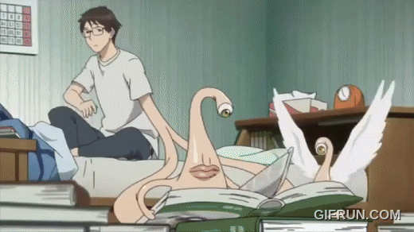

Teenager Shinichi Izumi is a high-school student who lives in a quiet Tokyo neighborhood with his parents. His life changes when wormlike creatures, called Parasites, appear on Earth, bent on taking over the brains of human hosts by entering their ears or noses. One such Parasite tries to crawl into Shinichi's ear while he's sleeping one night, but his headphones block entry, so the creature -- who gets the name Migi -- burrows into Shinichi's arm instead, taking over control of his right hand. Shinichi and Migi eventually form a bond as they work together to survive their unique circumstances.
Obsidian Cinema is a website dedicated to providing information about various movies and TV shows. We offer detailed descriptions, character profiles, and product recommendations related to the content we feature. Our goal is to create an engaging experience for movie enthusiasts and fans of different genres.
We bring horror enthusiasts closer to the stories that keep them on the edge of their seats. Our website provides detailed descriptions, plot overviews, character information, and interesting facts about a variety of horror movies and TV shows. Whether you’re discovering a new series or revisiting a familiar nightmare, we help you explore the stories, characters, and dark worlds behind every title.